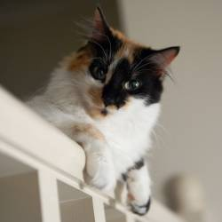
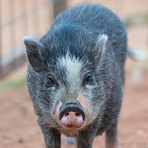

Check out my super sweet and super cool sunglasses. I love playing fetch and running around with other dogs but my absolute favorite thing to do is sit on the couch.
I am a cat, most people think dogs are cooler then cats so I dunno. I like running around doing cat things such as being aloof and chasing laser pointers. My favorite is sitting on people's heads whilst they slumber.
I am a pig? How did I get here?!? I thought this was just for cats and dogs. Please don't turn me into bacon!!?!
Another no profit no kill shelter with numerous locations throughout Philadelphia. They are always looking for donations to help take care of the needy animals in the area.
A Shelter for homeless and abandonded pets in the Philadelphia region. Started by Elizbeth Morris in 1874, this animal refuge is still being run today in Center City Philly.
Maybe not adoption in the traditional sense but the Philadelphia Zoo has a lot of mouths to feed and they could use your help and support.